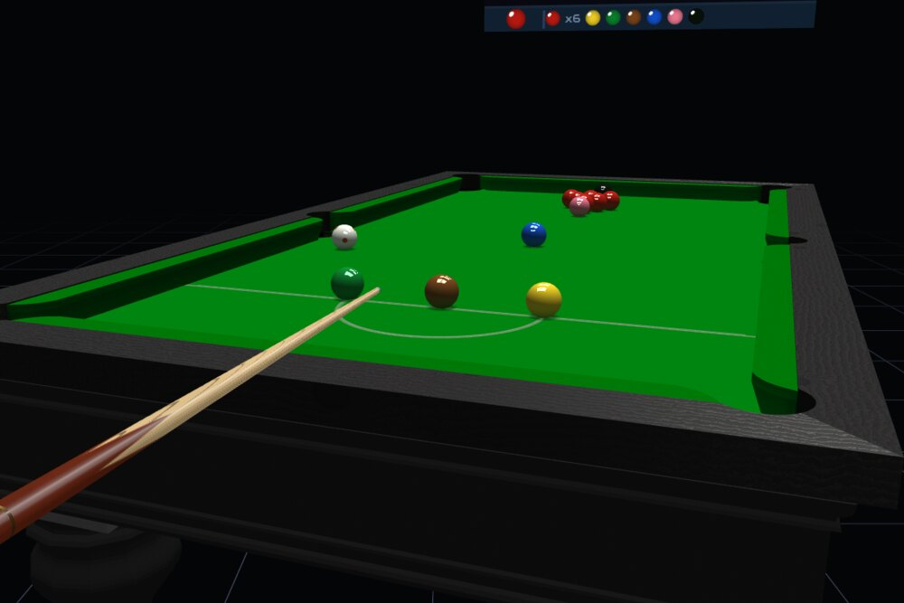
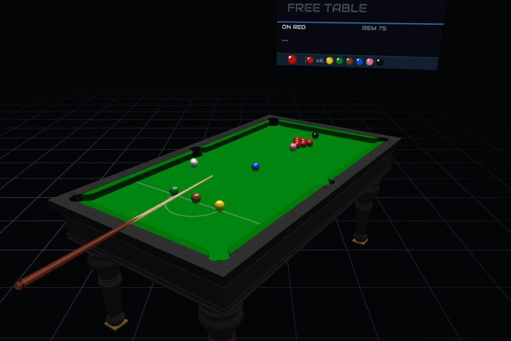

CueVR
Snooker and pool, on a real-size table, in your own room.
A player’s guide · by austinio7116
MIXED REALITY
7 GAMES
8 OPPONENTS
18 CUES
TWO-HEADSET MULTIPLAYER
MEASURED PHYSICS
CueVR puts a full-size table in the room you are standing in. There is no shot meter, no aiming line to drag and no power slider: you hold a cue, you get down on the shot, and you play it.
You need a Quest 3 or 3S and enough clear floor to walk down one side of a table. The game runs in passthrough, so the table lands in your real room — you will be walking around your own furniture, not a virtual hall, unless you choose otherwise.

The one setup step worth taking slowly, because everything else rests on it. You are deciding where a real-size table sits in your real room, and how high its bed is.

A championship snooker table has a bed about 85 cm off the floor, which is where the placement screen starts. You do not need room for the whole table to be walkable — most players site it so the baulk end is reachable and walk round when a shot calls for it.
It stays where you put it between sessions. If you move rooms, open the pause menu with the MENU button and choose PLACE TABLE.

Two hands on a cue, exactly as you would hold one. The left controller is your bridge, the right is your grip.


Seven, each on the table it is really played on, with that game’s rules, its own rack and its own pocket cut. They are not one table with different balls on it.


Match length is set on the main menu: a single frame, or best of 3, 5, 7, 9 or 11. The break alternates and the score carries across the match.
Eight, and they change how easy the table is to read as much as how it looks. Pick the one you can call at a glance from the far end.


The rules are enforced properly, and spoken: fouls, free balls, the score as it goes, and your break total at the end of a frame.

At snooker that means the whole apparatus: reds then colours, colours respotted while reds remain, a free ball after a snooker foul, a called miss with the option to make the offender play again, and the endgame in colour order. At the pool games it is the group you are on, the two-shot carry at UK 8-ball, and the push-out at 9-ball.
When your opponent fouls you are asked what to do about it — play on from where the balls lie, or make them play the shot again. Where a miss has been called and the table can be put back, that is offered too. The referee announces the outcome.
The voice can be female, male, or off entirely: the REF VOICE row on the main menu. With it off you still get the scoreboard.
Eight, and they are not one engine with a wobble bolted on. They differ in how straight they hit it, how hard they think about position, how willing they are to play safe, and how much they will risk.
| Player | Rating | What they are like |
|---|---|---|
| Rookie Rick | 1278 | Misses a lot, takes on anything, no idea where the white is going. |
| Steady Sue | 1382 | Cautious and tidy. Will not take on a shot she does not fancy. |
| Professor Pete | 1428 | Thinks about position properly, but is not the straightest. |
| Hustler Hank | 1447 | Fast and aggressive, plays with pace and takes them on. |
| Clara CueQueen | 1501 | Accurate and balanced — the first genuinely difficult one. |
| Deadshot Dave | 1633 | Pots almost everything. Position is not his priority. |
| Iron Nina | 1715 | Very straight and very positional. Will punish a loose safety. |
| The Machine | 1616 | No aiming error at all, maximum thinking. It makes centuries. |

A season against the field rather than a single frame against whoever you fancied.


You climb by winning matches against progressively better opponents, and the standings persist between sessions — so a season is something you come back to rather than something you finish in one sitting.
Not everything has to be a frame.
The table to yourself, no rules and no opponent. Put the balls where you like and hit them. Nothing is scored and nothing is punished.
A set goal on a set layout — clear the table, or reach a score. Judged over a single visit, so it stays practice rather than something to grind.


Play a real person on the same table, either across the room on your own Wi-Fi or across the internet.


Both players see the same table, the same balls and the same score. You will see your opponent’s cue move as they play, and the cue they are holding is the one they chose from the rack. The referee calls fouls at both ends, and the player who was fouled against gets the decision.
The table, the cloth, the timber, the balls, the cue, the light and the room are all yours to choose. None of it changes how the game plays — it changes what you are standing at.


Seven finishes on the frame and rails, from pale oak to black ebony:


Twenty-four colours. A sample of what they do to the room:


The full range: BLACKSILVERTAUPETANGOLDPAPRIKANUTMEGRANGER GREENOLIVECHAMPIONSHIPSAGEPOWDER BLUESLATENAVYROYAL BLUEFRENCH NAVYROYAL NAVYPURPLEMAROONCHERRYWINDSOR REDREDORANGEPINK


Eighteen cues, authored one at a time against real catalogues rather than recoloured from a single model — spliced butts, veneered points, wrapped handles, inlays.


Your choice travels with you: in an online match, the cue your opponent sees in your hands is the one you picked.
A shot feels like a shot because most of the numbers underneath were measured rather than dialled in until they looked plausible.
Rubber gives back less the harder it is hit, and each table has its own. A snooker cushion, a UK championship cushion and an American pool cushion do not answer a ball the same way, and here they don’t either.
Cut per table and per pocket, so what you see on the cloth is exactly what catches the ball. The jaws take pace off a hard pot instead of spitting it out — and a ball can rattle.
Object balls are thrown slightly off the line of centres by friction, as real ones are. It is why a thin cut does not go quite where the geometry says it should.
Spin follows from the same place: screw needs pace to survive the trip up the table, side throws the object ball and deflects the white off your aim, and a ball struck above centre runs on through the contact.

Pause → PLACE TABLE, and set the height against something real in your room. This fixes more complaints about the cue feeling wrong than anything else.
Walk round. It is a full-size table and you are meant to move. If your play space is small, site the table nearer one wall and use the long side you can reach.
CONTROLS → RESET CUE.
Each end re-syncs from whichever player owns the event, so a difference should heal within a shot. If a frame genuinely gets stuck, either player can re-rack from the pause menu.
REF VOICE on the main menu — female, male, or off.